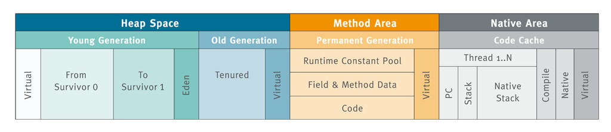
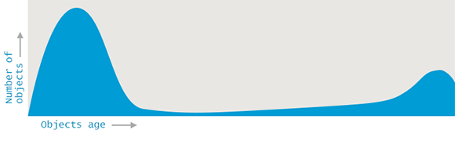

Java虚拟机的内存区域 叫做 运行时数据区 , 这是一张比较典型的内存划分图

Heap Space
堆内存,我们经常在命令行启动的时候指定了他的大小.用于分配和存储绝大部分的对象实例.是VM管理的最大一块内存, 也是垃圾收集器的主要活动区域.
程序中的大多数可回收的内存可归为两类: - 大部分对象很快就不再使用 - 还有一部分不会立即无用,但也不会持续(太)长时间

这些观测形成了 弱代假设(Weak Generational Hypothesis).基于这一假设, VM中的内存被分为年轻代(Young Generation)和老年代(Old Generation).老年代有时候也称为 年老区(Tenured).拆分为这样两个可清理的单独区域，允许采用不同的算法来大幅提高GC的性能。
如上图,横坐标可理解为对象的存活时间.大部分对象分配完不就就被回收了.有一些要存活很久.垃圾回收会导致应用程序停顿(Stop-the-world).对于不同存活时间的对象在垃圾回收区别对待从而进行各种优化来减少这种停顿,是分代内存结构设计的初衷.
年轻代(Young Generation) 进一步划分为Eden区 和 两个存活区(Survivor). Eden用来分配新创建的对象.在一次Miror GC后Eden区的对象未被回收的将被放到Survivor区的其中一个,Eden和另一个Survivor被清空.符合条件的被晋升到老年代(Old Generation).可以使用一张图来形象表示一下

Method Area
也称为”永久代”(Permanent Generation).这是用于存储被JVM加载的类信息、常量、静态变量、即时编译器编译后的代码等数据.
Java 8直接删除了永久代(Permanent Generation),改用 Metaspace.元数据区位于本地内存(native memory),不再影响到普通的Java对象.默认情况下, Metaspace的大小只受限于Java进程可用的本地内存.
Native Area
线程私有域,它生命周期与线程相同,依赖用户线程的启动/结束而创建/销毁(在Hotspot VM内, 每个线程都与操作系统的本地线程直接映射,因此这部分内存区域的存/否跟随本地线程的生/死).
PC
Program Counter Register(程序计数器),一块较小的内存空间,作用是当前线程所执行字节码的行号指示器(类似于传统CPU模型中的PC),PC在每次指令执行后自增,维护下一个将要执行指令的地址.
Stack
Java 虚拟机栈,每个方法被执行时会创建一个栈帧(Stack Frame)用于存储局部变量表、操作数栈、动态链接、方法出口等信息.每个方法被调用至返回的过程, 就对应着一个栈帧在虚拟机栈中从入栈到出栈的过程(VM提供了-Xss来指定线程的最大栈空间, 该参数也直接决定了函数调用的最大深度)
Native Stack
本地方法栈,与Java Stack作用类似,区别是Java Stack为执行Java方法服务,而本地方法栈则为Native方法服务.
结语
本文简述了一下,Java虚拟机的内存模型.大部分系统都还没到拼JVM调优的时候,但是全面了解能够在遇到系统瓶颈时迅速定位.及时发现和解决一些坏代码.